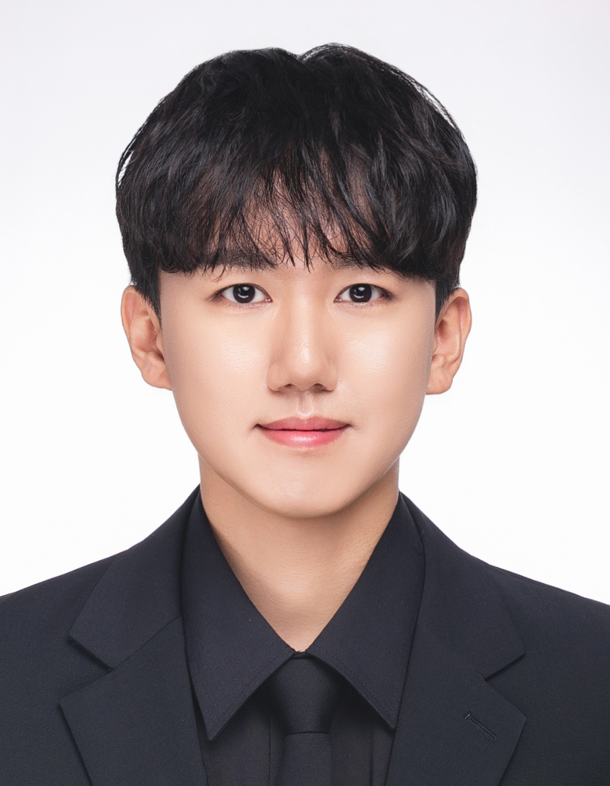

Korea University (Seoul, Republic of Korea)
Sep 2025 – Present
Master's student in Department of Bioengineering
Advised by Prof. Yong-Sang Ryu

A quick look at what I work with hands-on in the cleanroom and on-screen. Click any skill to see related equipment, results, and photos.